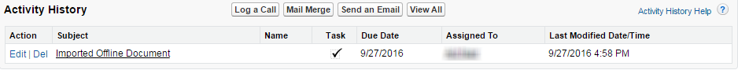

Importing Offline Agreements
Business requirements often dictate the use of third-party agreements that are not generated using Apttus Contract Management templates. In these cases, you need to import those documents into Salesforce and apply Apttus properties to use X-Author's features for negotiation.
X-Author Contracts provides a means to import a document into Salesforce and attach it to a pre-existing agreement record. After you import the document successfully, it is stored on the agreement record under Document Versions as an imported offline agreement, and available for check out, editing, and redlining in X-Author just as if it were generated in Apttus Contract Management.
Importing an offline agreement requires you to have the document stored locally on your computer.
To import an offline agreement
-
Open the document in Microsoft Word.

-
Click Check In Offline.

The document is imported into the agreement record, attached to the Document Versions Related List and adopts Apttus properties.
The new draft is downloaded to your system.
-
Open the draft that just downloaded in Word. Go to the Lock Status page and click Acquire Lock to check out and work with your document. You can now mark fields and clauses and use other X-Author features as needed.

If you go to the agreement record in Salesforce, you can see the "Imported Offline Document" action in the Activity History Related List.
